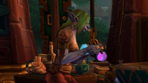
This Battle for Azeroth Alchemy guide provides an overview of the additions and changes to Alchemy in World of Warcraft Battle for Azeroth.Table of contents
New in Patch 8.3
Void Focus
You will build a new crafting station called the Void Focus. The station is used to craft the new raid gear (ilvl 440/455/470).
Check out my guide on How to Unlock the Void Focus. (It works exactly the same as the Abyssal Focus worked in patch 8.2.)
Trinkets
The recipe for the Unbound Alchemist Stone is a random drop from Faceless, K'thir, Aqir, and Cultists mobs that worship N'Zoth. You can find these mobs at the new Vale of Eternal Blossom and Uldum Assaults and inside Lesser Visions.
You will discover the recipe for the ilvl 455 trinket by crafting the ilvl 440 trinket. And you need to craft the ilvl 455 trinket to discover the ilvl 470 trinket recipe.
- Unbound Alchemist Stone - ilvl 440 - Alchemy 165
- Awakened Alchemist Stone - ilvl 455 - Alchemy 170
- Peerless Alchemist Stone - ilvl 470 - Alchemy 175
New in Patch 8.2
Most new potions are basically just upgraded versions of the 8.0 potions. But there are 4 new potions with unique procs.
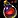
Abyssal Healing Potion- Greater Flask of Endless Fathoms
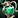
Greater Flask of the Currents- Greater Flask of the Undertow
- Greater Flask of the Vast Horizon
 Greater Mystical Cauldron
Greater Mystical Cauldron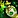
Superior Battle Potion of Agility- Superior Battle Potion of Intellect
- Superior Battle Potion of Strength
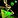
Superior Steelskin Potion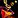
Potion of Focused Resolve - Narrow your gaze to a single foe. Your damaging abilities will mark the target, increasing your chance to critically strike them up to 20%. Damaging a new target will reset your focus. (1 Min Cooldown) Potion of Empowered Proximity - Empowers your abilities, increasing your primary stat by 360 for 25 sec. Your primary stat is further increased by the number of enemies within 8 yards of you, up to a maximum of 1800. (1 Min Cooldown)
Potion of Empowered Proximity - Empowers your abilities, increasing your primary stat by 360 for 25 sec. Your primary stat is further increased by the number of enemies within 8 yards of you, up to a maximum of 1800. (1 Min Cooldown) Potion of Unbridled Fury - Fill yourself with unbridled energy, giving your offensive spells and attacks a chance to do an additional 3600 Fire damage to your target. (1 Min Cooldown)
Potion of Unbridled Fury - Fill yourself with unbridled energy, giving your offensive spells and attacks a chance to do an additional 3600 Fire damage to your target. (1 Min Cooldown)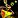
Potion of Wild Mending - Empowers your mind, giving your healing abilities a chance to restore an additional 5400 health to your target. (1 Min Cooldown)- Abyssal Alchemist Stone - ilvl 410 trinket
- Crushing Alchemist Stone - ilvl 425 trinket
- Ascended Alchemist Stone - ilvl 440 trinket
Learning BfA Alchemy
The new BfA Alchemy skill is named differently for the two factions, but the name is the only difference between them.
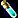
Alchemy Trainers:
- Horde: You can find Clever Kumali in Dazar'alor at the Terrace of Crafters.
- Alliance: Elric Whalgrene is located in Boralus at the Tradewinds Market.
{kind=link}
{kind=link}
You can walk up to a guard in Dazar'alor or Boralus then ask where the Alchemy trainer is located. This will place a red marker on your map at the trainer's location.
Leveling Alchemy
Professions skills are split between expansions now, you'll have a separate skill bar for each expansion. This means you can level the new Battle for Azeroth skill tier without putting any point into any of the previous expansions tiers, you don't have to level Alchemy with older materials to be able to craft the new BfA potions. The new Battle for Azeroth Alchemy has a maximum of 175 skill points. You can read more about this in my BfA Profession overview.
Every BfA recipe will require different Alchemy skill levels, so it's very different from what we had in Legion where you could craft most high-level potions/flask with Alchemy skill 1. You will have to level your BfA Alchemy skill up if you want to craft high-level potions/flasks etc.
For example, the  Mystical Cauldron requires BfA Alchemy 145.
Mystical Cauldron requires BfA Alchemy 145.
Check out my BfA Alchemy leveling guide 1-175, if you are looking for a more in-depth leveling guide with exact numbers and reagents needed.
Acquiring Recipes
Most recipes still have ranks just like in Legion, but there are no profession quests for crafting profession in BfA, you will learn most rank 1 and rank 2 recipes from your trainer. They are gated by profession skill, so you have to level your Alchemy up to get every recipe.
- Rank 1: Allows you to craft a recipe.
- Rank 2: Reduce the materials required to create a recipe.
- Rank 3: Chance to create multiple potions/flask etc.
Reputation Vendors
You can buy most Rank 3 recipes from vendors, but none of them require Exalted reputation, only Revered, so it's pretty easy to get them. (A few rank 3 recipes come from World Quests)
Horde:
- Zandalari Empire - Natal'hakata in Zuldazar.
- Voldunai recipes - Hoarder Jena in Vol'dun.
- Talanji's Expedition - Provisioner Lija in Nazmir.
- The Honorbound - Ransa Greyfeather in Zuldazar.
Alliance:
- Storm's Wake - Sister Lilyana in Stormsong Valley.
- Order of Embers - Quartermaster Alcorn in Drustvar.
- Proudmoore Admiralty - Provisioner Fray in Tiragarde Sound.
- 7th Legion - Vindicator Jaelaana in Tiragarde Sound.
Neutral:
- Tortollan Seekers - Collector Kojo at Scaletrader Post in Zuldazar, or by Collector Kojo at Seeker's Vista in Stormsong Valley.
Alchemy Perks
Mixology
The Alchemy perk Mixology doubles flask and elixir duration, but only when drinking an elixir or flask you know how to make. So, for example, you can't get an increased Flask duration with only 1 point in Alchemy, you need to level Alchemy to at least 90.
Trinkets
You can craft 2 different Alchemy trinkets, and both of them are upgradeable 2 times. You will need to craft the lower item level trinkets to get the recipe for the higher item level ones.
IMPORTANT: If you use the Scrapper I mention in my Expulsom Farming Guide, you can get every soulbound material back when you scrap these trinkets. (Hydrocore, Sanguicell, Tidalcore, Breath of Bwonsamdi)
Trinkets crafted with old materials (Hydrocore, Sanguicell):
- ilvl 355 - Sanguinated Alchemist Stone - Requires Alchemy 100.
- ilvl 370 -
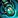
Imbued Alchemist Stone - Discovered from crafting Sanguinated Alchemist Stone. - ilvl 385 - Emblazoned Alchemist Stone - Discovered from crafting Imbued Alchemist Stone
Trinkets crafted with new materials (Tidalcore, Breath of Bwonsamdi)
- ilvl 385 - Tidal Alchemist Stone - Requires Alchemy 130.
- ilvl 400 - Spirited Alchemist Stone - Discovered from crafting Tidal Alchemist Stone.
- ilvl 415 - Eternal Alchemist Stone - Discovered from crafting Spirited Alchemist Stone.
Silas' Sphere of Transmutation
If you level your character to level 120 and your Battle for Azeroth Alchemy to 150, then you can unlock a special questline to craft Silas' Sphere of Transmutation. This item allows you to interact with various cauldrons on Kul Tiras and Zandalar (free potions and flasks), and you can also transmute it into one of 4 random items for 1 hour.
The 4 items it can Transmute into:
- Silas' Vial of Continuous Curing - Restores 33251 health (1 Min Cooldown)
 Silas' Decanter of Disguise - Disguises the imbiber as one of a variety of creatures from across the world. (1 Min Cooldown)
Silas' Decanter of Disguise - Disguises the imbiber as one of a variety of creatures from across the world. (1 Min Cooldown)- Silas' Stone of Transportation - Summons an all-seeing eye for 2 min who will teleport you to a nearby safe haven instantly while outdoors in Kul Tiras or Zandalar. (9 Min Cooldown)
- Silas' Potion of Prosperity - Increases your chance to create extra items from your Kul Tiran Alchemy recipe list. (20 Min Cooldown) (doubles the proc chance of your Rank 3 Alchemy craftables)
The questline will take you through the process of creating your tool and give you some backstory on where the recipe comes from. Most of the quests are really straightforward and easy so I'll skip explaining each quest. Just follow your quest log and check the markers on your map.
To get started on your profession quest line, speak with your profession trainer Clever Kumali (Horde) in Dazar'alor or Elric Whalgrene (Alliance) in Boralus. You can walk up to a guard in Dazar'alor or Boralus then ask where your profession trainer is located. This will place a red marker on your map at the trainer's location.
After you complete the quest chain, you will get the  Recipe: Silas' Sphere of Transmutation recipe. To craft this item, you need:
Recipe: Silas' Sphere of Transmutation recipe. To craft this item, you need:
- 50 x
 Anchor Weed
Anchor Weed - 10 x
 Expulsom
Expulsom - 1 x
 Mystical Cauldron
Mystical Cauldron - 1 x
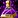
Purposefully Potent Potion - Drop from Thistle Acolyte in Waycrest Manor dungeon. (Any Difficulty) - 1 x
 Sphere of Sangaurum - Drop from Priestess Alun'za boss in Atal'Dazar dungeon. (Any Difficulty)
Sphere of Sangaurum - Drop from Priestess Alun'za boss in Atal'Dazar dungeon. (Any Difficulty) - 1 x
 Extremely Precise Vial - Drop from Venture Co. Mastermind and Venture Co. Alchemist adds before the third boss in The MOTHERLODE!! dungeon. (Any Diffictulty)
Extremely Precise Vial - Drop from Venture Co. Mastermind and Venture Co. Alchemist adds before the third boss in The MOTHERLODE!! dungeon. (Any Diffictulty) - 1 x
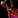
Sly Rogue's Decanter - Drop from Jes Howlis in Tol Dagor. (Any Difficulty)
Crafting Materials
There are 7 new Herbs:  Anchor Weed
Anchor Weed  Akunda's Bite
Akunda's Bite  Winter's Kiss
Winter's Kiss  Sea Stalk
Sea Stalk  Star Moss
Star Moss  Siren's Pollen
Siren's Pollen  Riverbud
Riverbud
There are also 5 soulbound crafting materials:
 Expulsom is obtained primarily from scrapping armors and weapons using the Scrap-o-Matic 1000 (Alliance), or the Shred-Master Mk1 (Horde). These tools work like disenchanting, you can break down any gear obtained that is from the Battle for Azeroth expansion, including dungeon/raid drops, quest rewards, world drops, and crafted gear. You can read about this in more detail if you visit my Expulsom Farming Guide.
Expulsom is obtained primarily from scrapping armors and weapons using the Scrap-o-Matic 1000 (Alliance), or the Shred-Master Mk1 (Horde). These tools work like disenchanting, you can break down any gear obtained that is from the Battle for Azeroth expansion, including dungeon/raid drops, quest rewards, world drops, and crafted gear. You can read about this in more detail if you visit my Expulsom Farming Guide.
 Tidalcore is a guaranteed drop from the last boss in a Mythic dungeons and from the chest at the end of any level Mythic Plus Dungeon. They can also drop from the last boss of a heroic dungeon, however, this is not a guaranteed drop.
Tidalcore is a guaranteed drop from the last boss in a Mythic dungeons and from the chest at the end of any level Mythic Plus Dungeon. They can also drop from the last boss of a heroic dungeon, however, this is not a guaranteed drop.
 Breath of Bwonsamdi drops from bosses in the new raid Battle for Dazar'alor and is used for crafting epic 400 and 415 item Alchemy trinkets. (1 from each LFR wing, 1 from a Normal boss, 10 from a Heroic boss, 20 from a Mythic boss)
Breath of Bwonsamdi drops from bosses in the new raid Battle for Dazar'alor and is used for crafting epic 400 and 415 item Alchemy trinkets. (1 from each LFR wing, 1 from a Normal boss, 10 from a Heroic boss, 20 from a Mythic boss)
 Sanguicell drops from raid bosses in Uldir. (1 from each LFR wing, 1 from a Normal boss, 10 from a Heroic boss, 20 from a Mythic boss)
Sanguicell drops from raid bosses in Uldir. (1 from each LFR wing, 1 from a Normal boss, 10 from a Heroic boss, 20 from a Mythic boss)
 Hydrocore used to drop in Mythic dungeons, but it no longers drops since patch 8.1, and you can only get it by using Transmutes.
Hydrocore used to drop in Mythic dungeons, but it no longers drops since patch 8.1, and you can only get it by using Transmutes.
Transmutes
There is a number of new transmutes, but they all share a 1-day cooldown, so you can only craft one of these each day. ( Aqueous Dilution and
Aqueous Dilution and  Sanguinated Dilution doesn't have a cooldown)
Sanguinated Dilution doesn't have a cooldown)
You can unlock  Transmute: Expulsom with Alchemy skill 110, but the rest of them only require an Alchemy skill of 50.
Transmute: Expulsom with Alchemy skill 110, but the rest of them only require an Alchemy skill of 50.
- Transmute: Expulsom
 Transmute: Cloth to Skins
Transmute: Cloth to Skins Transmute: Herbs to Cloth
Transmute: Herbs to Cloth Transmute: Herbs to Ore
Transmute: Herbs to Ore Transmute: Meat to Pet
Transmute: Meat to Pet Transmute: Fish to Gems
Transmute: Fish to Gems- Transmute: Ore to Gems
- Transmute: Ore to Cloth
 Transmute: Ore to Herbs
Transmute: Ore to Herbs Aqueous Dilution - Convert
Aqueous Dilution - Convert  Tidalcore into Hydrocore.
Tidalcore into Hydrocore. Sanguinated Dilution - Convert
Sanguinated Dilution - Convert  Breath of Bwonsamdi into Sanguicell.
Breath of Bwonsamdi into Sanguicell.- Transmute: Herbs to Anchors - Transmute herbs into Anchor Weed.
Potions
The table below shows the skill requirement required to learn each Rank 1 and 2 potion recipes. The Rank 3 recipes for potions come mostly from reputation vendors, but some of them come from world quests.
|
Recipe |
Alchemy skill |
Rank 3 | |
| Rank 1 | Rank 2 | ||
|---|---|---|---|
| 1 | 40 |
Zandalari Empire / Storm's Wake - Revered | |
| 1 | 40 |
Talanji's Expedition / Proudmoore Admiralty - Revered | |
| Coastal Rejuvenation Potion | 1 | 40 |
Voldunai / Order of Embers - Revered |
| 25 | 50 | World Quest | |
| 25 | 50 | World Quest | |
| 25 | 50 | World Quest | |
| 25 | 50 | World Quest | |
| 40 | 60 |
Zandalari Empire / Storm's Wake - Revered | |
| Potion of Rising Death | 40 | 60 |
Voldunai / Order of Embers - Revered |
| 40 | 60 |
Talanji's Expedition / Proudmoore Admiralty - Revered | |
| Steelskin Potion | 40 | 60 |
The Honorbound / 7th Legion - Revered |
| 50 | 75 |
Sold by Ozgrom Ragefang (Horde) and Leedan Gustaf (Alliance) | |
| 50 | 75 |
Voldunai / Order of Embers - Revered | |
| 50 | 75 |
Talanji's Expedition / Proudmoore Admiralty - Revered | |
| 50 | 75 |
The Honorbound / 7th Legion - Revered | |
| 50 | 75 |
Zandalari Empire / Storm's Wake - Revered | |
Flasks
|
Recipe |
Alchemy skill |
Rank 3 | |
| Rank 1 | Rank 2 | ||
|---|---|---|---|
| 90 | 110 |
The Honorbound / 7th Legion - Revered | |
| 90 | 110 |
Zandalari Empire / Storm's Wake - Revered | |
| 90 | 110 |
Voldunai / Order of Embers - Revered | |
| 90 | 110 |
Talanji's Expedition / Proudmoore Admiralty - Revered | |
Trinkets and Follower Equipment
|
Recipe |
Alchemy skill |
Rank 3 | |
| Rank 1 | Rank 2 | ||
|---|---|---|---|
| 25 | 60 |
Tortollan Seekers - Revered | |
| 25 | 60 |
Tortollan Seekers - Revered | |
| 80 | 100 |
The Honorbound / 7th Legion - Revered | |
| 80 | 100 |
The Honorbound / 7th Legion - Revered | |
| 60 | - | - | |
| Vial of Obfuscation | 60 | - | - |